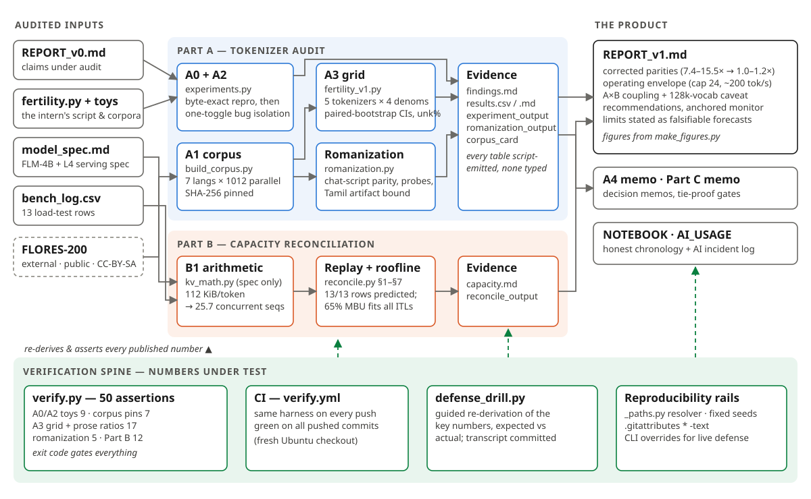
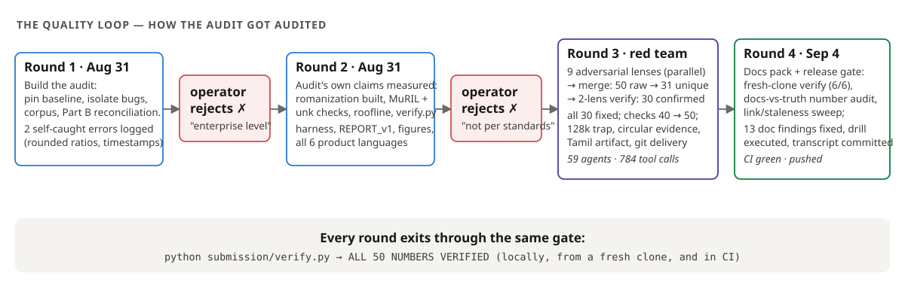

Complete design explanation: what every component does, why it exists, and how each one is verified · repo: github.com/Manureddy148/AI_Task2 · audit 2026-08-31 · document compiled 2026-09-04 · markdown source: ARCHITECTURE.md
A departed intern benchmarked the tokenizer (fertility.py on two 10-line corpora) and the serving stack (a 13-row load-test log), and wrote REPORT_v0: "Hindi costs ~5.89× English per word — a property of the script; route Indic traffic and budget 6×" and "longer prompts give better throughput; ~1600 tok/s per L4, linear to ~3200 at batch 48." Leadership is about to spend money on both claims. The audit's job is to determine what is actually true — under a scoring rule where every unverified claim costs points and fabricated evidence is an automatic fail.
That rule dictates the architecture. The system is built as three layers: (1) measurement pipelines (Part A for tokenizer economics, Part B for serving capacity) whose every output is emitted by a version-controlled script; (2) a product layer (REPORT_v1 and the decision memos) that only quotes what the pipelines emit; and (3) a verification spine that re-derives and asserts every published figure — locally, from a fresh clone, and in CI — so drift between evidence and prose is structurally impossible rather than diligently avoided.

Reading the diagram. Everything flows left to right: the four audited artifacts (plus one public external dataset) enter the two pipeline bands; each band deposits its results into script-emitted evidence files; the product layer assembles only from those files. The green spine at the bottom points upward because that is its job: it consumes the evidence and the prose and asserts them against each other — 50 assertions, exit code gated, run by CI on every push.
| Rule | Mechanism | Why it exists |
|---|---|---|
| 1. Pin the baseline first | REPORT_v0's numbers (1.27 / 0.226, 7.45 / 1.579, "5.89×") reproduced byte-exact from the shipped script + corpora before any claim was made. | Without it, no delta is attributable — a "bug fix" could be an environment difference. It also proved the intern's numbers were honestly produced, narrowing the audit to method, not fraud. |
| 2. One variable at a time | experiments.py re-implements v0, asserts equality against the shipped module (gold check), then toggles exactly one candidate flaw per run. | Combined fixes hide direction and magnitude. Isolation is what let the audit report honestly that all three code bugs pushed the same way and summed to only −3.7% — the metric, not the code, was the story. |
| 3. Cleared items are deliverables | random.seed(1337): byte-identical output with the line deleted. NFC: 0.00% deltas on the toys — then found to normalize 93 hin / 609 ben lines on real data. | The assignment plants harmless-looking suspects; flagging one without evidence scores negative. Clearing with an experiment converts a trap into credit — and NFC's clearance upgraded to "actively useful." |
| 4. Scripts over prose | Every table is emitted by a script; live-defense changes are CLI flags (--corpus LANG=PATH, --hin, --log, STARTER_KIT), never code edits. | The defense includes "run your script with this input I paste." A hardcoded path or count fails that live. (Round 3 found and fixed exactly such hardcodings — a bootstrap with n=10 six times.) |
| 5. Numbers under test | verify.py: 50 assertions re-deriving every published figure; CI runs it on every push; a prose number with no assertion is treated as unpublished. | This repo's own history is the argument: hand-typed figures went stale five separate times across rounds. The class of error is unfixable by care; it is fixable by assertion. |
Re-implements v0's pipeline with four independent toggles and proves equivalence to the shipped code before measuring. Findings, each isolated against the pinned 5.8871× baseline:
| Toggle | Verdict | Isolated effect on the headline | Mechanism |
|---|---|---|---|
| split(" ") → split() | bug | +0.59% | runs of spaces create phantom empty-string "words" (one planted double space in each toy file) |
| remove lower() | bug | +2.92% | GPT-2 BPE is cased; lowercasing inflates only English token counts (Devanagari is caseless) — an asymmetric distortion of the very ratio being measured |
| macro → micro aggregation | methodological bug | +0.35% | mean-of-ratios weights a 4-word line like a 12-word one; corpus totals are what cost scales with |
| remove NFC | cleared | exactly 0.00% | toys already normalized; on FLORES the call does real work (≤+0.51% tokens, ben) |
| random.seed | cleared | byte-identical output | dead code — grep shows no other random. reference |
The same file quantifies the data flaws: the toys are only partially parallel (5 of 10 sentence pairs, scrambled), and a 10k-resample bootstrap puts ±9% of sampling noise on the 5.89× headline alone — motivating A1.
FLORES-200 devtest: 1012 professionally-translated sentences, n-way parallel, for English + all six product languages (hin, kan, tam, tel, ben, mar — three Indo-Aryan, three Dravidian, five scripts). Parallelism is the load-bearing property: it is the only way to hold content — the thing revenue and cost actually scale with — constant across languages. The builder is deterministic (public tarball, verbatim extraction, LF-normalized, SHA-256 pins asserted by the spine); the corpus card documents sizes, licence, and — deliberately — what the corpus cannot say (formal translated wiki prose ≠ conversational code-mixed traffic; domain shift, not sampling noise, is the honest error bar).
The conceptual core. A denominator is a claim about what you hold constant; on identical content the candidate units disagree wildly, so the choice decides the conclusion:
| Denominator | gpt2 hin "premium" | Why it distorts |
|---|---|---|
| whitespace word (v0's choice) | 6.34× | words carry different content per language: errs −15% (hin) to +36% (kan) — can mis-rank languages for budgeting |
| grapheme cluster | 11.39× | "character" is script-dependent; matras merge into clusters |
| UTF-8 byte | 2.90× | encoding artifact (Indic scripts: 3 B/code point); can flip the sign of the conclusion under a good tokenizer |
| code point | 7.46× | len()'s unit — neither grapheme nor byte, consistently |
| parallel sentence (content) | 7.42× | the only unit cost actually scales with — the audit's headline metric ("parity") |
The grid runs 5 tokenizers × 7 languages with paired-bootstrap CIs (2000 resamples, seed 42; worst half-width 1.28%) and an unk-rate integrity column — WordPiece/SentencePiece can collapse unknown spans into a single token and fake good fertility, so every cell's unk share is measured (worst 0.38%). The tokenizer axis falsifies v0's root-cause claim: same script, same sentences — gpt2 7.42× vs MuRIL (Indic-focused) 1.16× for Hindi, a 6.4× spread from vocabulary allocation alone. Exhibit:

Exists because round 1's memo asserted "romanized Hindi tokenizes like English" without measurement — this audit's own evidence rule applied to its author. Method: IAST transliteration → strip diacritics → lowercase → danda/candra normalization, with three built-in honesty devices: a residual-script counter (source letters surviving transliteration — now 0 everywhere, asserted), a Tamil artifact bound (the scheme invents aspirates Tamil orthography cannot express, so Tamil is published as a range, 2.37–3.09×), and an organic-spelling probe (attested chat conventions move hin o200k 1.87 → 1.76 — still above native 1.57). Verdict: romanization cuts the premium ~3× on gpt2-class vocabs but is worse than native for hin/mar/ben on modern vocabs — script mix belongs on a dashboard, not in a constant.
KV/token = 2 (K,V) × 28 layers × 8 KV heads × 128 head_dim × 2 B (fp16) = 114,688 B (112 KiB) KV budget = 0.92 × 24 GB − 8.4 GB weights − 1.6 GB overhead = 12.08 GB per 4k seq = 4096 × 114,688 B = 448 MiB capacity = 12.08 GB ÷ 0.4698 GB = 25.7 → ~25 sequences
Derived from the model spec alone, before looking at the log — so the log becomes a test, not an input. Every printed equation is an f-string over the constants: change GPU_MEM_UTIL live and the whole derivation re-prints consistently.
Replays all 13 bench rows against the prediction: kv_cache_util matches every row within 2-decimal rounding, and preempted_seqs is predicted exactly — 7 = 32−25 and 23 = 48−25 at the knee. The same replay settles two ambiguities: the stack's "24 GB" is decimal (a GiB reading predicts util 0.82 / 3 preemptions — rejected by the logged 0.93 / 7), and reported_tok_s ≡ (prompt+gen)·n/wall on all rows within 0.022% — the counter counts prefill, which is the entire §2 misreading: honest goodput at the stable peak is 201 tok/s (by definition; independently corroborated by n/itl ≈ 250 tok/s over the decode phase), not 1607, and batch 48 measures 162, not 3200.
itl = (8.4 GB weights + resident_seqs × avg_ctx × 112 KiB) / (eff × 300 GB/s)
A single fitted efficiency, eff ≈ 0.65, reproduces all 13 measured inter-token latencies within ±2.8% — short and long sweep, before and after the preemption knee. Compute is 1.7 ms/step against 63.2 ms of memory traffic: decode is memory-bound ~38× over. The model then prices both fixes as falsifiable forecasts: admission control max_num_seqs=24 (offered-48 wall −19%, goodput +24%, zero preemptions — pure log arithmetic) and fp8-KV (capacity 2× arithmetic-certain; ITL −27% contingent on the MBU transferring to fp8 kernels), with the confirming counter named (vllm:num_preemptions_total ≥7 / ≥23).
The serving spec says vocab = 128k — which cannot be gpt2 (50,257). So "the current stack costs 7.4×" was unjustified as production pricing; REPORT_v1 brackets the premium (cl100k row as scale illustration), keeps the one claim that survives every measured tokenizer (a 3584-token English prompt's content cannot fit in Hindi: min premium 1.16 > 1.14), and promotes "measure FLM-4B's actual tokenizer" to a recommendation. Found by the round-3 red team, not by the author — which is the point of §6.
| Assertion group (50 total) | What it protects |
|---|---|
| A0/A2 toy experiments — 9 | baseline byte-match (1.2652 / 7.4485 / 5.8871), gold check vs the shipped module, all four isolated deltas incl. E4 ≡ 0 |
| Corpus integrity — 7 | SHA-256/12 pin + 1012-line count per language; fails loudly if newline translation or edits touch the data |
| A3 grid + prose ratios — 17 | 11 headline parities to 4 decimals, unk ceiling, the C1 distortion percentages, the Tamil-saving ratio, the CI-width bound (computed from results.csv itself), the code-point ratio |
| Romanization — 5 | native + romanized parity on both tokenizer generations, live-recomputed; zero-residual check |
| Part B — 12 | KV constants, budget, capacity, all-13-row util/preemption/counter identities, unique row binding, goodput two ways + steady decode, roofline mean and spread |
Around the harness: CI (.github/workflows/verify.yml) runs it on every push on a fresh Ubuntu checkout — green on every pushed commit; defense_drill.py turns the candidate's personal re-derivation into a guided ~10-minute session (executed, transcript committed); and the reproducibility rails: _paths.py (input resolution via env var or either zip nesting, fail-fast), fixed seeds, .gitattributes * -text (a CRLF checkout would silently shift token counts and break every hash pin), and CLI overrides on every measurement script.

Two human rejections escalated the process from "polish it" to "audit the auditor": a deterministic multi-agent workflow ran nine adversarial reviewer lenses in parallel (rubric grader, tokenizer expert, statistician, serving-infra staff, defense interrogator, forensic numbers auditor, code reviewer, engineering bar-raiser, Part C lead), merged 50 raw findings into 31, then attacked each surviving finding with two verification lenses (factual accuracy · materiality at a staff bar) — 30 confirmed, 1 refuted, all 30 fixed the same evening. The most valuable catches were the ones the author's own method condemns: an unmeasured claim in a memo, algebraically circular "independent" corroboration, and the 128k-vocab spec trap. Round 4 applied the same treatment to the documentation itself (fresh-clone gate 6/6, docs-vs-ground-truth audit, link/staleness sweep — 13 findings, fixed), and caught a bulk find-replace that had rewritten the lab notebook's own history, since restored. Full incident log: docs/INCIDENTS.pdf; chronology: NOTEBOOK.md rounds 1–4.
| Script | Reads | Emits | Asserted by |
|---|---|---|---|
| partA/audit/experiments.py | toy corpora (v0's) | experiment_output.md | verify §A0/A2 (9) |
| partA/corpus/build_corpus.py | FLORES tarball (public) | data/*.txt, corpus_stats.md | verify §corpus (7) |
| partA/fertility_v1.py | data/*.txt | results.csv, results_tables.md | verify §A3 (17) |
| partA/audit/romanization.py | data/*.txt | romanization_output.md | verify §rom (5) |
| partB/kv_math.py | model_spec constants | B1 derivation (stdout) | verify §B (12) |
| partB/reconcile.py | bench_log.csv + kv_math | reconcile_output.md | verify §B (12) |
| figures/make_figures.py | results.csv + bench_log | fig1/fig2 PNG (computed annotations) | rendered + eyeballed |
| verify.py / defense_drill.py | all of the above | exit code / drill_transcript.txt | CI, on every push |
submission/
REPORT_v1.md the product: corrected report for the leadership deck (figures/)
verify.py numbers-under-test harness — 50 assertions; defense entry point
defense_drill.py guided re-derivation session (+ committed drill_transcript.txt)
_paths.py starter-kit resolver (env var / both zip nestings, fail-fast)
NOTEBOOK.md · AI_USAGE.md · requirements.txt
partA/ audit/ (repro, one-toggle experiments, findings, romanization)
corpus/ (builder, card, 7 hash-pinned parallel files)
fertility_v1.py · results/ · memo.md
partB/ kv_math.py · reconcile.py (13-row replay + roofline) · capacity.md
partC/ memo.md casual-tone decision memo (tie-proof gates, kill criteria)
docs/ ARCHITECTURE / INSTRUCTIONS / INCIDENTS (PDF + HTML sources + diagrams/ + make_pdfs.ps1)
.github/workflows/verify.yml · ARCHITECTURE.md · README.md · starter_kit/ (audited inputs)